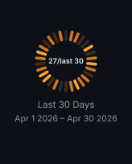
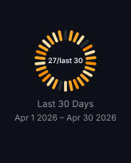

Themes and type
Light, dark, and transparent, the face the text is set in, and why a ramp cannot serve both surfaces unchanged.
Themes#
--theme picks the palette: light (default), dark, or transparent. An unrecognised name fails the run rather than quietly rendering the default.
options: --user your-github-login --theme darktransparent drops the background but keeps the dark text of the light palette, so it belongs on a light surface. For a dark surface use dark.
Typeface#
--font picks the family: sans (default) or mono.
options: --user your-github-login --font mono --padding 16mono asks for the family GitHub sets its own code in, so a card sitting above a fenced block of text reads as one design rather than two. Pin --padding 16 alongside it and the card's text begins on the same column the block's text does, since a code block indents its own text by 16px.
It is also the more exactly placed of the two: the layout measures a character as six tenths of its size, which is what a monospaced face actually does and only an average of what a proportional one does.
Following the reader's colour scheme#
GitHub honours <picture> in a README, so generate one card per surface and let the browser choose. Add a second generate step:
- uses: liuchong/github-personal-stats@v1.5.1
with:
card: dashboard
path: profile/github-personal-stats.svg
options: --user your-github-login --theme light
token: ${{ secrets.PERSONAL_STATS_TOKEN }}
- uses: liuchong/github-personal-stats@v1.5.1
with:
card: dashboard
path: profile/github-personal-stats-dark.svg
options: --user your-github-login --theme dark
token: ${{ secrets.PERSONAL_STATS_TOKEN }}Then reference both, keeping the light file as the fallback for clients that ignore the media query:
<picture>
<source media="(prefers-color-scheme: dark)" srcset="./profile/github-personal-stats-dark.svg" />
<img src="./profile/github-personal-stats.svg" alt="GitHub Personal Stats" width="100%" />
</picture>Colour scheme queries inside the SVG are not a substitute. GitHub serves the file as an image through its own proxy, so a single self-switching SVG cannot be relied on; two files and <picture> is the supported path.
What the dark palette changes#
A heat ramp encodes intensity as distance from the background, so the same stops cannot serve both surfaces. On a light card the quiet end is pale and recedes; on a dark card that same pale stop is the brightest thing in the ring, which makes a one-commit day outshout a fifty-commit day. The built-in palettes and single-colour ramps therefore turn around on dark: the quiet end sinks to just above the ring track and the busy end climbs.
--theme light
Quiet days recede, busy days read orange
--theme dark
Quiet days recede into the surface, busy days glow
dark with light stops forced
The quiet majority dominates and the ring reads inside out
Four explicit stops are always taken exactly as given, on every theme, which is how the third example above is produced. If you spell out stops and also want dark support, spell out a second set for the dark card.
Visual Notes#
- Use the default dashboard when you want a clean profile header without layout drift.
- Use individual cards only when your README needs a custom arrangement.
- Keep generated SVGs committed so profile pages render quickly and do not depend on a live image server.
- Prefer a scheduled workflow cadence such as daily updates; profile stats rarely need minute-level refreshes.